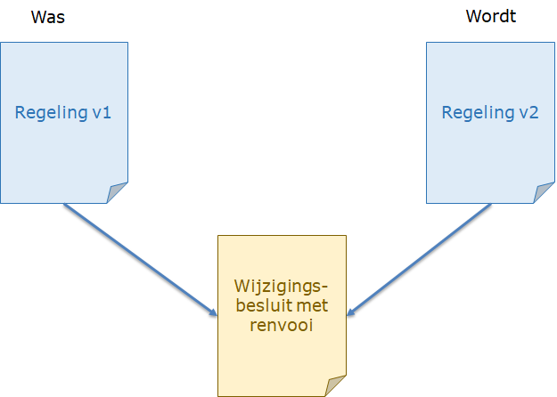
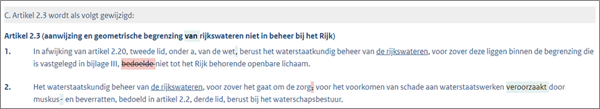

Bepalen van Wijzigingen en Renvooi
Deze leeswijzer richt zich op het bepalen van wijzigingen en renvooi van tekst (STOP v1.3.0)
Begripsdefinities
Tabel 1: Begrippenkader wijzigingen en renvooi
| Begrip | Definitie |
|---|---|
| Mutatie-eenheid | Een te wijzigen imop-tekst element. Met andere woorden een element waarop een mutatie-actie kan plaatsvinden. De kleinste mutatie-eenheden waarop een mutatieactie is toegestaan zijn tekst:Artikel (artikelsgewijs) en tekst:Divisietekst (vrije tekst). |
| Mutatieactie | In imop-tekst.xsd zijn de volgende mutatieacties beschikbaar: tekst:Vervang, tekst:VervangKop, tekst:Verwijder, tekst:VoegToe. |
| Renvooimarkering | Met renvooimarkering wordt hier verwezen naar het attribuut wijzigactie, en de elementen tekst:VerwijderdeTekst en tekst:NieuweTekst. Renvooimarkering wordt enkel gebruikt binnen de mutatieacties tekst:Vervang en tekst:VervangKop. |
| Wijzigingsbesluit | Een besluit die een reeds bestaande regeling (‘was’) wijzigt. Het wijzigingsbesluit bevat alle wijzigingen (wijzigingen in tekst, maar ook wijzigingen in attributen, toegevoegde elementen etc.) die gezamenlijk de delta vormen tussen de ‘was’ en ‘wordt’ versie van een regeling. |
Introductie
STOP introduceert een nieuwe wijzigmethodiek: renvooi. Binnen een wijzigingsbesluit moeten de juridische verschillen tussen twee versies van regelingen waar over besloten is, expliciet kenbaar gemaakt worden. Een STOP wijzigingsbesluit bevat zowel de nieuwe tekst als de oude vervallen tekst in STOP renvooimarkering. De nieuwe zodat geautomatiseerd de RegelingVersie gereconstrueerd kan worden die aan de basis lag van het besluit, de oude om te voldoen aan juridische criteria voor het markeren van het besluit.
Figuur 1: Wijzigingsbesluit op hoofdlijnen

Figuur 2 geeft een voorbeeld van een wijzigingsbepaling met renvooi.
NB de STOP-standaard onderkent functionele verbeelding; de visualisatie van renvooi wordt dus bepaald door het systeem dat van STOP gebruik maakt.
Figuur 2: Voorbeeld van een wijzigingsbepaling (met tekst:Vervang)

'Besloten' en 'overige' wijzigingen
Besloten wijzigingen
Het basiscriterium hier is: alles wat in de juridisch authentieke tekst (en later in de bekendmaking) zichtbaar is. De volgende wijzigingen vallen hierbinnen en vereisen renvooi:
Gebruik van de mutatieactie tekst:Verwijder. Dit is te herkennen aan een verwijderde 'wId' op een mutatie-eenheid in de wordt-versie van de regeling (t.o.v. de was-versie).
Gebruik van de mutatieactie tekst:VoegToe. Het toevoegen van een mutatie-eenheid. Dit is te herkennen aan de toevoeging van een nieuwe 'wId' op een mutatie-eenheid in de wordt-versie van de regeling (t.o.v. de was-versie).
Gebruik van de mutatieactie tekst:Vervang of tekst:VervangKop in combinatie met:
Wijzigingen in de lopende tekst (zoals tekst:Al, etc.);
Wijzigingen in afbeeldingen (te herkennen aan een nieuwe
//Illustratie[@naam]Wijzigingen in tabellen; of
Het toevoegen/verwijderen van bepaalde, in tabel 2 opgenomen, inline elementen.
Overige wijzigingen
Overige wijzigingen zijn wijzigingen die niet als onderdeel van de juridisch authentieke versie van het besluit worden gezien. In deze categorie vallen wijzigingen van attributen (anders dan wId), weblinks en opmaakelementen (zie ook tabel 2). Overige wijzigingen komen niet in de bekendmaking van het besluit tenzij ze samenvallen met 'besloten' wijzigingen binnen een mutatie-eenheid (in dat geval hebben de overige wijzigingen geen 'renvooimarkering'). De overige wijzigingen (evenals de besloten wijzigingen) komen wel in de consolidatie van de regeling.
Tabel 2: Inline elementen met/zonder renvooi
| Inline element | In renvooi? |
|---|---|
| tekst:i | Nee |
| tekst:b | Nee |
| tekst:u | Nee |
| tekst:sub | Ja |
| tekst:sup | Ja |
| tekst:strong | Nee |
| tekst:abbr | Nee |
| tekst:br | Ja |
| tekst:Nootref | Ja |
| tekst:Noot | Ja |
| tekst:ExtRef | Nee |
| tekst:IntRef | Nee |
| tekst:ExtIoRef | Nee |
| tekst:IntIoRef | Nee |
| tekst:InlineTekstAfbeelding | Ja |
Regels voor de bepaling van wijzigingen en renvooi
Een belangrijke motivatie voor de hier beschreven renvooiwijzigmethodiek is dat verschillen tussen regelingversies geautomatiseerd bepaald kunnen worden. De STOP-standaard heeft hiertoe de in tabel 3 opgenomen renvooiregels uitgewerkt. Dit zijn ook de regels waar de renvooiservice gebruik van maakt.
Tabel 3: Regels voor de bepaling van wijzigingen en renvooi
| ID | Functionele eis |
|---|---|
| 1 | De RegelingMutatie (met alle wijzigingen hierin) die uit een renvooitransformatie komt, voldoet aan het imop-tekst.xsd. |
| 2 | Alle wijzigingen tussen twee regelingversies komen terug in de RegelingMutatie. Indien een mutatie-eenheid enkel 'overige' wijzigingen bevat, dan wordt de mutatie-actie als een 'revisie' beschouwd. M.a.w. //Vervang[@revisie="1"] wordt gebruikt. Een gereviseerde mutatie-eenheid komt niet in de bekendmaking (OfficielePublicatie.xml), maar wordt wel doorgevoerd in de consolidatie van de regeling. Voorbeeldscenario: Een Hoofdstuk wordt vernummerd; de onderliggende Artikelen krijgen enkel een nieuwe @eId. Afhandeling: a) //VervangKop op het Hoofdstuk met een @eId-wordt , b) //Vervang[@revisie="1"] op de onderliggende artikelen. |
| 3 | De renvooibepaling kent 'voldoende' detail. Implicaties: Renvooi vindt plaats op het niveau van een ‘woord’ of ‘leesteken’ (niet volledige zinnen). |
| 4 | Tabelstructuurwijzigingen. Het toevoegen of verwijderen van een rij wordt met renvooimarkering aangegeven (m.b.v. //row[@wijzigactie]). Indien een tabel complexere structuurwijzigingen bevat en de bovenliggende mutatie-eenheid ook andere wijzigingen kent, dan worden zowel de was-versie (//table[@wijzigactie="verwijder"]) als de wordt-versie (//table[@wijzigactie="voegtoe"]) van de tabel worden in de RegelingMutatie opgenomen. Indien een tabel complexere structuurwijzigingen bevat en de bovenliggende mutatie-eenheid geen andere wijzigingen kent, dan worden enkel de wordt-versie van de tabel opgenomen in de in de RegelingMutatieopgenomen, zonder renvooimarkering. De mutatieactie wordt vervolgens aangeduid met de inleidende zin "... komt te luiden:" |
| 5 | Het wijzigingen van een Illustratie leidt tot het vervangen van het bovenliggende //Figuur m.b.v. het attribuut @wijzigactie (verwijder/voegtoe). Een afbeelding wordt gezien als gewijzigd indien //Illustratie[@naam] is veranderd. |
| 6 | Iedere mutatieactie met een 'besloten' wijziging moet ingeleid zijn met een gestandaardiseerde zin. Een voorlopige opzet van gestandaardiseerde zinnen is te vinden in tabel 4. |
| 7 | Mutatieacties worden toegepast op de kleinste mutatie-eenheid, tenzij alle child-elementen van een bovenliggend parent-element artikelen of divisieteksten zijn die 'besloten' wijzigingen bevatten. In dat geval wordt de mutatieactie toegepast op het niveau van het parent-element. |
| 8 | Indien een nieuw niveau van structuur wordt ingevoegd (bijvoorbeeld een paragraaf binnen een afdeling) of verwijderd, dan wordt de complete bovenliggende mutatie-eenheid vervangen (inclusief alle kindelementen). Bij het tussenvoegen of verwijderen van een structuurniveau (m.b.v. @wijzigactie="nieuweContainer", respectievelijk @wijzigactie="verwijderContainer") worden alle kindelementen (ook die zonder 'besloten' wijzigingen) in de bekendmaking opgenomen. Renvooimarkering wordt expliciet meegegeven aan de kop onderliggend aan het toegevoegde/verwijderde structuurniveau. |
| 9 | Indien een element wordt ingevoegd (in de wordt-versie) onder een verder lege parent dan wordt het gehele parent element vervangen. |
| 10 | Indien gebruik wordt gemaakt van @wijzigactie om een element te vervangen (bijv. een Lid), waardoor een eId tweemaal dreigt voor te komen dan wordt _inst2 toegevoegd aan het verwijderde element eId om de uniciteit van de eId binnen het Besluit te borgen. |
| 11 | Het toevoegen of verwijderen van een lidstructuur binnen //Artikel (//Artikel/Inhoud vs. //Artikel/Lid/Inhoud) wordt afgehandeld met @wijzigactie="nieuweContainer", respectievelijk @wijzigactie="verwijderContainer" |
| 12 | Indien een mutatie-eenheid een besloten wijzing in de //Kop kent en daarnaast een overige wijziging in de //Inhoud, dan wordt de gehele mutatie-eenheid vervangen (gebruikmakend van //Vervang en niet //VervangKop). |
| 13 | Indien een mutatie-eenheid wordt ingevuld in de wordtVersie die voorheen //Gereserveerd was en de mutatieactie //Vervang wordt toegepast op een bovenliggend parent-element (zie regel 7), dan wordt bij de eerste mogelijkheid binnen de mutatie-eenheid een dummy element aangemaakt met het attribuut @wijzigactie ="verwijder" en gevuld met [Gereserveerd]. |
| 14 | Indien een tekstwijziging samenvalt met een 'niet te renvooieren' inline opmaakelement, dan wordt de wijziging alsnog voorzien van renvooimarkering: Was-versie: Wordt-versie: Wijzigingsbesluit: |
| 15 | Indien //Bijlage enkel een //Divisietekst (met besloten wijzigingen) heeft dan wordt de //Bijlage als mutatie-eenheid geselecteerd |
De juridisch authentieke bekendmaking toont alleen de gewijzigde mutatie-eenheden met renvooi (en dus niet de gehele wordt-tekst met renvooimarkering). Om de context van een mutatieactie te kunnen duiden, wordt er in de tekst:Wat bij een mutatieactie een korte inleiding gegeven inzake de context van de wijziging (NB er kan maar één tekst:Wat voorkomen per mutatieactie). Deze 'inleiding' kan gegenereerd worden langs de regels in de onderstaande tabel.
LET OP: Voor renvooi in rectificaties worden licht afwijkende zinnen gehanteerd.
Tabel 4: Voorbeeldopzet van 'gestandaardiseerde' inleidende zinnen
| Mutatieactie | Invulling | Voorbeeld |
|---|---|---|
| tekst:VoegToe [@positie="volgtOp"] | Enkelvoud: Meervoud: | A. Na artikel 149a worden twee artikelen ingevoegd, luidende: |
| tekst:VoegToe[@positie="komtVoor"] | Enkelvoud: Meervoud: | B. Voor artikel 2 wordt een artikel ingevoegd, luidende: |
| tekst:VervangKop bij wijziging van opschrift en/of vernummering | [#] Het opschrift van [mutatie-eenheid] wordt op de aangegeven wijze gewijzigd: | C. Het opschrift van hoofdstuk VII wordt op de aangegeven wijze gewijzigd: |
| tekst:Vervang bij wijziging onderliggende inhoud (met eventuele vernummering of niet) | [#][mutatie-eenheid] wordt op de aangegeven wijze gewijzigd: | D. Artikel 149a wordt op de aangegeven wijze gewijzigd: |
tekst:Vervang invulling van een eerder Zowel de was-tekst als de wordt-tekst wordt getoond in de PDF/HTML bekendmaking. | [#][mutatie-eenheid] wordt op de aangegeven wijze gewijzigd: | E. Artikel 2.12 wordt op de aangegeven wijze gewijzigd:
Bij een aanvraag ... |
| tekst:Vervang met enkel een verplaatsing | [#][verplaatste mutatie-eenheid] wordt verplaatst van [bestaande parent mutatie-eenheid] naar [nieuwe parent mutatie-eenheid]. | F. Artikel 2.4 wordt verplaatst van paragraaf 2.3.2 naar paragraaf 2.3.3. |
| tekst:Vervang met verplaatsing en wijziging en/of vernummering | [#][verplaatste mutatie-eenheid] wordt verplaatst van [bestaande parent mutatie-eenheid] naar [nieuwe parent mutatie-eenheid]. [#] [mutatie-eenheid] wordt op de aangegeven wijze gewijzigd: | G. Artikel 2.4 wordt verplaatst van paragraaf 2.3.2 naar paragraaf 2.3.3. Paragraaf 2.3.3 wordt op de aangegeven wijze gewijzigd: |
| tekst:Vervang met uitsluitend de vervanging van een tabel | [#][mutatie-eenheid] komt te luiden: | H. Bijlage XII komt te luiden: |
tekst:Vervang met een Zowel de was-tekst als de wordt-tekst wordt getoond in de PDF/HTML bekendmaking | [#][mutatie-eenheid] wordt op de aangegeven wijze gewijzigd: | I. Artikel 7.3 wordt op de aangegeven wijze gewijzigd: Artikel 7.3 (exclusieve economische zone) Deze regeling is ook van toepassing in de exclusieve economische zone.
|
tekst:Verwijder heeft dezelfde verbeelding als //tekst:Vervallen. NB | [#][mutatie-eenheid] wordt op de aangegeven wijze gewijzigd: | J. Artikel 9 wordt op de aangegeven wijze gewijzigd: Artikel 9 (exclusieve economische zone) Deze regeling is ook van toepassing in de exclusieve economische zone.
|
| tekst:Vervang van een Divisie of Divisietekst onder een RegelingVrijetekst | [#] De volgende sectie wordt op de aangegeven wijze gewijzigd: | K. De volgende sectie wordt op de aangegeven wijze gewijzigd: |
| tekst:VervangKop van het opschrift en/of vernummering van een Divisie of Divisietekst | [#] Het volgende opschrift wordt op de aangegeven wijze gewijzigd: | L. Het volgende opschrift wordt op de aangegeven wijze gewijzigd: |
| tekst:Vervang van een Divisie of Divisietekst binnen een Bijlage | [#] Binnen [Bijlage + Nummer] wordt de volgende sectie op de aangegeven wijze gewijzigd: | M. Binnen bijlage VIII wordt de volgende sectie op de aangegeven wijze gewijzigd: |
| tekst:VervangKop van het opschrift en/of vernummering van een Divisie of Divisietekst binnen een Bijlage | [#] Binnen [Bijlage + Nummer] wordt het volgende opschrift op de aangegeven wijze gewijzigd: | N. Binnen bijlage VI wordt het volgende opschrift op de aangegeven wijze gewijzigd: |
[#]doornummering van mutatieacties conform de Aanwijzingen voor de Regelgeving: A., B., C., ..., Z, AA, BB, CC, ..., ZZ, AAA, BBB, CCC etc. Bij iedere<WijzigBijlage>opnieuw beginnen bij A.[Mutatie-eenheid]als<Label> + <Nummer>, m.u.v.<Lichaam>. Indien<Lichaam>de mutatie-eenheid is, dan komt er in de<Wat>: “Het lichaam van de regeling”